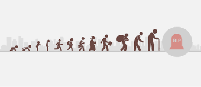

Cluster analysis is an important concept as it helps businesses understand the natural grouping of certain variables in a dataset. Especially for investors, in the case of this project, who want to understand the best portfolios when investing in the stock market. The purpose of this project was to conduct Kmeans clustering to identify the different clusters of the top thirty companies on the Johannesburg Stock Exchange (JSE). The variables I used were the daily stock returns and the standard deviation of those stocks to input into the Kmeans algorithm. I also plotted a Dendrogram to visualize the hierarchical clustering as well. I sourced the data from yahoo finance using the API.
The aim of this project was about predicting the stock prices of six top companies on the JSE using Monte Carlo Simulation. I chose companies in different industries ranging from internet services, telecommunications, retail, banking, and mining; the companies in question are Naspers, MTN, Richemont, Massmart, ABSA, and Anglo America. Monte Carlo Simulation was the method of choice for the prediction. I predicted 250 days and a thousand simulations for each stock. I obtained the data using the Yahoo Finance API.

Over the years there has been a gradual increase in crime and unemployment in South Africa. Therefore, this project aimed to determine if there is a significant correlation between these two variables where the period covered is between 2006 to 2016. In the project, I also demonstrated data cleansing techniques and data visualisation using Python. I obtained the datasets from Kaggle and the SAPS website.

The purpose of this project was to assess the life expectancy of countries around the world, and how it is affected by certain socio-economic and health factors, such as income, schooling, and diseases using regression. The data I obtained from Kaggle, however, originally it is from the Global Health Observatory (GHO) data repository under World Health Organization (WHO). The time series of the data is from 2000 to 2015.
This project aimed to conduct hypothesis testing to determine if regions with higher vaccination rates than others are experiencing lower fatalities. I sourced the data from the World Health Organisation (WHO), last updated on the 2nd of September 2021. The Pearson Correlation and the Spearman Rank Correlation were the two methods used to evaluate both a linear and monotonic relationship between the variables.
The purpose of this project was to conduct a four-year forecast on the BRICS Nations' inflation rate. The BRICS consist of Brazil, Russia, India, China, and South Africa. These countries rank among the world's fastest-growing emerging market economies, thanks to low labour costs, favourable demographics, and abundant natural resources. I acquired the data from the World Bank Data Bank last updated 15 September 2021. The forecasting model implemented was the Auto Regression Model.
The purpose of conducting this project was to ascertain if good governance and ease of doing business in a country have a relationship with the amount of investment it receives both domestically and foreignly. I chose three countries, which are New Zealand, South Africa, and Eritrea to conduct this analysis. The reason I choose these three countries is that for governance and ease of doing business, New Zealand ranks on the upper spectrum, South Africa is in the middle and Eritrea is on the lower end of these rankings, so with this, I thought it would provide a more realistic picture if there were a relationship with investment. This was a multiple linear regression analysis. I sourced the data from the World Bank Data Bank.
The purpose of this project was to conduct exploratory data analysis (EDA) to better understand the customer data. By understanding consumer behaviour, it can be easier to segment the customers. I sourced the data from Kaggle. The library data prep was the main tool used to conduct the EDA process.
The purpose of this project was to understand the relationship between extreme poverty against factors such as GDP growth, population growth, literacy rate and unemployment rate. To understand this relationship I used the random forest regressor algorithm to conduct the regression. My sample group to conduct this analysis was the BRICS nations. The BRICS is an association of five major emerging market economies (Brazil, Russia, India, China, and South Africa) and usually, in developing countries, there is a higher chance of witnessing extreme poverty than in developed nations. I sourced the data from the World Bank Data Bank.

The purpose of this project was to conduct multiple linear regression analysis to predict the medical costs of individuals based on certain criteria. These criteria are, if the individual is a smoker or not, has children, what their body mass index is, and where they are from. I acquired the data from Kaggle.
The purpose of this project is quite simple, it is to conduct a classification exercise to put wine into different classes of quality based on multiple variables such as acidity, sugar, and alcohol. I sourced the dataset from Kaggle, and I used the Random Forest algorithm for this project.
The purpose of this project was to analyze global income inequality. Income inequality is a phenomenon that occurs when there is an uneven income distribution throughout a population. According to a United Nations report in 2020 income inequality has been on the rise and has been affecting more than two-thirds of the globe. This project dived into viewing the disparity between the top 1% and the bottom 50% of income earners and did a regression to determine if a relationship exists between the dependent variable of income inequality, measured by the Gini Coefficient, and the independent variables of the unemployment rate, government spending on education (% of GDP), gender inequality and corruption. I collected data from the World Bank Data Bank, Resource Watch and World Inequality Database.
The war between Ukraine and Russia has had a negative domino effect across multiple regions of the world both economically and politically. Therefore, this project aimed to investigate how the war has affected key food commodities that come from Ukraine and Russia. The key commodities produced and exported from Ukraine and Russia are wheat, barley, maize, and sunflower oil. I sourced the data from Our World in Data, Business Insider and Investing.com
The purpose of this project was to conduct binary classification using logistic regression on census data to classify if an individual earns an income of less than or equal to US50,000 or greater than US50,000 based on certain variables. The explanatory variables in the dataset were age, work class, education, education num, marital status, relationship, race, gender, capital gain, capital loss, hours per week, and native country. I sourced the data from the UCI machine learning repository, and it is based on 1994 census data from the US Census Bureau.
The purpose of this project was about classification, to predict if a patient's breast cancer is either benign or malignant. I used Logistic regression for this classification project, and I obtained the data from the UCI Machine Learning Repository.
The purpose of this project was to conduct customer segmentation of mall customers. The best way to tackle this problem was to implement clustering algorithms on the data set. Clustering is a form of unsupervised machine learning that uses unlabelled data by discovering patterns in the data and then forming natural groups/clusters. There is a hand full of clustering algorithms, but this project will be using Kmeans and Hierarchical (Agglomerative and Divisive) clustering. I obtained the data from Kaggle.
The purpose of this project was to find a classification solution for the titanic dataset. This is a popular classification problem available on Kaggle, which is there to classify which passengers survived or died taking certain variables into account. I ran several classification models from logistic regression to random forest and the model that managed to achieve the best accuracy was the support vector machine classifier.